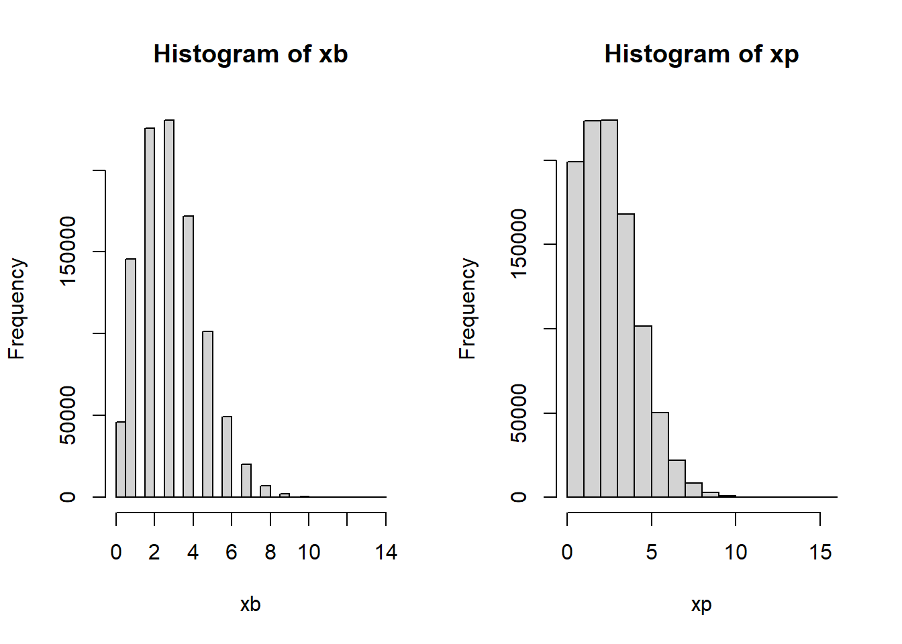

4 Tema 4: Distribuciones Discretas
4.1 Bernoulli
Sea \(X\) una v.a, se dice que \(X\sim Bernoulli(p)\) si su función de probabilidad es:
\[p(x)=P(X=x)= p^x (1-p)^{1-x} \hspace{0.5cm}; x=\{0,1\}\]
Probabilidad de exito \(P(X=0)=p^0(1-p)^{1-0}=1-p\), Probabilidad de fracaso \(P(X=1)=p^1(1-p)^{1-1}=p\).
Ejemplo, Sea el experimento lanzar una moneda y la variable aleatoria X\(=\)Sale Cara \(X=1\) cuando salga cara, \(X=0\) cuando no salga cara, si suponemos que la moneda es legal, \(p=0.5\). \(X\sim Bernoulli(p=0.5)\)
Sea el experimento lanzar dos dados y sumar el resultados de las caras, si definimos la variable aleatoria como \(X=1\) cuando la suma es 12 y \(X=0\) en otro caso, en este caso el valor de \(p=1/36\), \(X\sim Bernoulli(p=1/36)\)
Donde;
\[E[x]=p\]
Demostración:
\[E(X)=\sum_{Rx}xP(X=x)= 0*(1-p)+1*p=p\]
\[V[x]=p*(1-p)\]
\[E[X^2]=\sum_{Rx}x^2P(X=x)=0^2 (1-p)+1^2p=p\]
\[V(X)=E[X^2]-E[X]^2=p-p^2=p(1-p)\]
4.1.1 Usos Bernoulli
\(X\) representa éxito (\(X=1\)) o fracaso (\(X=0\)) en la realización de un proceso al azar. Con \(p\) la probabilidad de éxito \(0<p<1\).
4.2 Binomial
Sea \(X\) una v.a, se dice que \(X\sim Binomial(n,p)\) si su función de probabilidad es: \[p(x)=P(X=x)= {n \choose x} p^x (1-p)^{n-x} \hspace{0.5cm}; x=\{0,1,\ldots,n\}\] Donde;
\[\begin{array}{ll} E[x] & =n*p\\ V[x] & =n*p*(1-p)\\ M_X(t) & =(p*e^t+(1-p))^n \end{array} \]
4.2.1 Usos Binomial
\(X\) representa el número de éxitos en \(n\) ensayos independientes Bernoullis. Con \(p\) la probabilidad de éxito \(0<p<1\) en un ensayo bernoulli.
4.2.2 Ejemplos
- Un estudiantes rinde un examen con 10 preguntas de opción múltiple, donde cada pregunta contiene hasta 5 alternativas de respuesta, donde solo una es correcta. Si el estudiantes responde las preguntas al azar, defina la distribución de probabilidad que modela el problema y calcula la probabilidad que el estudiante;
- Conteste todas las preguntas de forma incorrecta
- Conteste todas las preguntas de forma correcta
- Obtenga más de la mitad de las respuestas correctas
Respuesta,
X: El número de preguntas respondidas de forma correcta, \(X\sim Binomial(n=10,p=1/5)\)
\[P(X=0)={n \choose x} p^x (1-p)^{n-x}={10 \choose 0} 0.2^0 (1-0.2)^{10-0}=0.107\]
\[P(X=10)={n \choose x} p^x (1-p)^{n-x}={10 \choose 10} 0.2^{10} (1-0.2)^{10-10}=0.0000001024\]
\[P(X>5)=P(X=6)+P(X=7)+P(X=8)+P(X=9)+P(X=10)=\sum_{x=6}^{10}{P(X=x)}=0.0064\] Tarea
La \(E[X]=np=10*0.2=2\), \(V(X)=np(1-p)=npq=10*0.2*0.8=1.6\), \(\sqrt{V(X)}=\sqrt{1.6}=1.26\)
Nota: Sea \(X_1,X_2,\ldots,X_n\), donde \(X_i \sim Bernoulli(p)\) para todo \(i=1:n\), si definimos a \(Y=X_1+X_2+\ldots+X_n\), \(Y\sim Binomial(n,p)\).
\[E[Y]=E[X_1+X_2+\ldots+X_n]=E[X_1]+E[X_2]+\ldots+E[X_n]=p+p+\ldots+p=np\]
Para la varianza tarea
Ejercicio, Supongamos que un jugador de basketball tiene una probabilidad de 7/9 de encestar un tiro libro y sus tiros son independientes. Si el consigue 5 tiros libres en un juego en particular. ¿Cuál es la probabilidad de que él enceste 2 o más tiros?.
Solución:
X: Número de tiros correctos, \(X\sim Binomial(n=5,p=7/9)\), \(Rx=\{0,1,2,3,4,5\}\)
\[P(X\geq 2)=\sum_{x=2}^{x=5}{P(X=x)}=P(X=2)+P(X=3)+P(X=4)+P(X=5)\]
\[P(X\geq 2)=1-P(X<2)=1-[P(X=0)+P(X=1)]=1- ( {5 \choose 0} (7/9)^0 (1-7/9)^{5-0}+{5 \choose 1} (7/9)^1 (1-7/9)^{5-1} )\]
\[P(X\geq2)=1-(0.00054+0.00948)=0.98997\]
4.3 Geométrica
Sea \(X\) una v.a, se dice que \(X\sim G(p)\) si su función de probabilidad es: \[p(x)=P(X=x)= p (1-p)^{x} \hspace{0.5cm}; x=\{0,1,\ldots\}\]
Donde; \[\begin{array}{ll} E[x] & =\frac{(1-p)}{p}\\ V[x] & =\frac{(1-p)}{p^2}\\ M_X(t) & = \frac{p}{1-(1-p)*e^t} \hspace{0.5cm} \end{array} \]
4.3.1 Usos Geométrica
\(X\) representa el número de fracasos antes de obtener el primer éxito en ensayos sucesivos Bernoullis. Con \(p\) la probabilidad de éxito \(0<p<1\).
4.3.2 Ejemplos
- Se realiza el lanzamiento de una moneda legal, Sea X una va, donde X: El número de fracasos antes de sacar Cara por primera vez. Calcular la probabilidad de \(X=10\), \(X=0\), \(X=5\).
Solución, \(X\sim G(p=0.5)\).
- \(P(X=10)=p (1-p)^x=0.5*0.5^{10}=0.00049\)
- \(P(X=0)=p (1-p)^x=0.5*0.5^0=0.5\)
- \(P(X=5)=0.5*0.5^5=0.0156=P(S_1\cap S_2\cap S_3\cap S_4 \cap S_5 \cap C_6)=P(S)^5*P(C)\)
- Una persona se compra un boleto de lotería cada mes, se conoce que en cada sorteo participan 100,000 boletos de lotería, 1) modele el problema, 2) calcule la probabilidad que esta persona gane la lotería el primer mes, 3) la probabilidad que gane la lotería en el mes 13, 4) La probabilidad que gane la lotería el primer año. 5) ¿Cuántos meses se espera hasta que esta persona gane la lotería?
Solución,
- X: El número de meses antes de ganar la lotería, \(X\sim G(p=1/100000)\)
- \(P(X=0)=p(1-p)^x=p(1-p)^0=p=\frac{1}{100000}\)
- \(P(X=12)=p(1-p)^{12}=1/100000*(1-1/100000)^{12}=0.000009998\)
- \(P(X=0)+P(X=1)+P(X=2)+\ldots+P(X=11)=P(X<12)=P(X\leq11)=TAREA\)
- \(E[X]=\frac{(1-p)}{p}=\frac{1-1/100000}{1/100000}=99999\), \(V(X)=\frac{1-p}{p^2}=9999900000\), \(\sqrt{V(x)}=99999.5\)
4.4 Binomial Negativa
Sea \(X\) una v.a, se dice que \(X\sim BN(r,p)\) si su función de probabilidad es: \[p(x)=P(X=x)= {r+x-1 \choose x} p^r (1-p)^{x} \hspace{0.5cm}; x=\{0,1,\ldots\}\] Donde;
\[\begin{array}{ll} E[x] & =\frac{r*(1-p)}{p}\\ V[x] & =\frac{r*(1-p)}{p^2}\\ M_X(t) & = \left(\frac{p}{1-(1-p)*e^t} \right)^r \hspace{0.5cm} ;t<ln(1/(1-p)) \end{array} \] ### Usos Binomial Negativa
\(X\) representa el número de fracasos antes de obtener \(r\) éxitos en ensayos sucesivos Bernoullis. Con \(p\) la probabilidad de éxito \(0<p<1\).
4.4.1 Ejemplo,
- (pg 471, 3). Una moneda correcta es lanzada sucesivamente hasta que aparezca cara por décima vez. Sea X la va que denota el número de sellos que ocurren. Hallar la función de probabilidad de \(X\).
Solución, \(X\sim BN(r=10,p=0.5)\)
\[P(X=x)= {9+x \choose x} 0.5^{10} 0.5^x \]
- Supongamos que una sucesión de lanzamientos independientes es hecho con una moneda, cuya probabilidad de obtener cara en cualquiera de los lanzamientos es de \(1/30\)
- ¿Cuál es la esperanza del número de sellos que se pueden obtener antes de que se obtengan 5 caras?
- ¿Cuál es la varianza del número de sellos que se pueden obtener antes de que se obtengan 5 caras?
Solución, \(X\sim BN(r=5,p=1/30)\), X: El número de sellos antes de obtener 5 caras
- \(E[X]=\frac{r*(1-p)}{p}=\frac{5*(29/30)}{1/30}=145\)
- \(V(X)=\frac{r*(1-p)}{p^2}=\frac{5*(29/30)}{(1/30)^2}=4350\), \(\sqrt{V(X)}=65\)
Tarea 1,
Tres personas tiran monedas al aire y el disparejo paga el café. Si los tres resultados son iguales, las monedas se tiran nuevamente. Encuentre la probabilidad de que se necesitan menos de 4 intentos. (Pg: 476, 30)
Nota: BN(r=1, p) = G(p)
Tarea 2,
Para la distribución geométrica, demostrar:
\[E[X]=\frac{(1-p)}{p}\]
\[E[X]=\sum_{Rx}{x*P(X=x)}=\sum_0^{\infty}{xp(1-p)^x}=\frac{(1-p)}{p}\]
4.5 Hipergeométrica
Sea \(X\) una v.a, se dice que \(X\sim H(N,n,r)\) si su función de probabilidad es: \[p(x)=P(X=x)= \frac{{N-r \choose n-x}{r \choose x}}{{N \choose n}} \hspace{0.5cm}; max\{0,n-N+r\} \leq x \leq min\{r,n\}\] Donde;
\[\begin{array}{ll} E[x] & =n*\frac{r}{N}\\ V[x] & =n * \frac{r}{N} * \frac{N-r}{N} * \frac{N-n}{N-1}\\ \end{array} \]
4.5.1 Usos Hipergeométrica
\(X\) denota el número de elementos que poseen la característica \(A\) en una muestra aleatoria de tamaño \(n\) seleccionado de una población de \(N\) elementos de los cuales \(r\) tienen característica \(A\) y \(N-r\) característica \(B\).
4.5.2 Ejemplo
- En una urna con 30 bolas de colores (10 negras, 5 blancas, 15 verdes). Se seleccionan 7 bolas de forma aleatoria y sin reposición. Si el interés es calcular la probabilidad de obtener bolas negras:
* Modelar la distribución que se ajusta al problema
* Calcular la probabilidad que se seleccionen; 0 bolas negras, todas negras, al menos 2 bolas negras.Solución, \(X\sim H(N=30,n=7,r=10)\), \(max(0,7-30+10) \leq x \leq min(10,7)\), \(0 \leq x \leq 7\)
\[P(X=0)=\frac{{20 \choose 7-x}{10 \choose x}}{{30 \choose 7}}=\frac{{20 \choose 7}{10 \choose 0}}{{30 \choose 7}}=\frac{77520*1}{2035800}=\frac{77520}{2035800}=0.038\] \[P(X=7)==\frac{{20 \choose 0}{10 \choose 7}}{{30 \choose 7}}=\frac{120}{2035800}=0.000059\]
\[P(X\geq 2)=P(X=2)+P(X=3)+...+P(X=7)\] \[P(X\geq 2)=1-P(X<2)=1-[P(X=0)+P(X=1)]=1-0.038-\frac{{20 \choose 6}{10 \choose 1}}{{30 \choose 7}}=1-0.038-0.19=0.772\] Tarea (Pg 459, Ej 8)
4.6 Poisson
Sea \(X\) una v.a, se dice que \(X\sim P(\lambda)\), (\(\lambda>0\)) si su función de probabilidad es: \[p(x)=P(X=x)= \frac{e^{-\lambda} \lambda^x}{x!} \hspace{0.5cm}; x=\{0,1,2, \ldots \}\] Donde;
\[\begin{array}{ll} E[x] & =\lambda\\ V[x] & =\lambda\\ M_X(t) & =e^{\lambda (e^t -1)} \end{array} \]
4.6.1 Usos Poisson
\(X\) representa el número de eventos de cierto tipo, que ocurren en un intervalo de tiempo, o en una región, o en un volumen.
- Fallas de un computador en un día de operación
- Número de clientes que entran a un banco en un día dado
Nota: Si \(X \sim binomial(n,p)\), si \(n \rightarrow \infty\) , \(p \rightarrow 0\) y \(\lambda=n*p\) permanece constante. Entonces se puede aproximar con \(X \sim Poisson(\lambda = n*p)\). \(n \geq 50\), \(p\leq 0.1\).

## Min. 1st Qu. Median Mean 3rd Qu. Max.
## 0.000 2.000 3.000 3.001 4.000 14.000## Min. 1st Qu. Median Mean 3rd Qu. Max.
## 0.000 2.000 3.000 3.002 4.000 16.0004.6.2 Ejemplos
- Cierta oficina de bomberos recibe en promedio 3 llamadas por día, calcular la probabilidad de que:
- Reciba 4 llamadas en un día
Solución, X: Número de llamadas que recibe la oficina de bomberos en un día, \(X\sim P(\lambda=3)\)
\[P(X=4)=\frac{e^{-\lambda} \lambda^x}{x!}=\frac{e^{-3}3^4}{4!}=\frac{4.0327}{24}=0.168\]
- Reciba 3 o más llamadas en un día
Solución, \(X\sim P(\lambda=3)\)
\[P(X\geq 3)=1-P(X<3)=1-[P(X=0)+P(X=1)+P(X=2)]=\ldots\]
- Reciba 10 llamadas en una semana (7 días)
Solución, X: el número de llamadas a la oficina de bomberos durante 7 días. \(X\sim P(\lambda=3*7=21)\)
\[P(X=10)=\frac{e^{-21}21^{10}}{10!}=0.00348\]
- ¿Cuántas llamadas en promedio se espera tener durante un año (365 días)?
Solución: 3*365=1095
- Suponga que hay en promedio 2 suicidios por año en una población de 50 mil habitantes. En una ciudad de 100 mil habitantes. Encuentre la probabilidad de que en un año dado haya:
- Un suicidio
- 2 o más suicidios